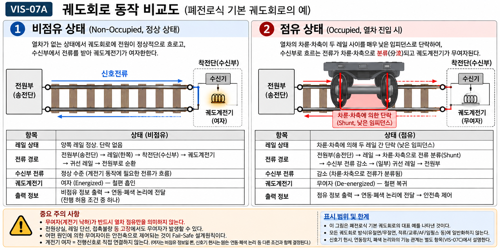
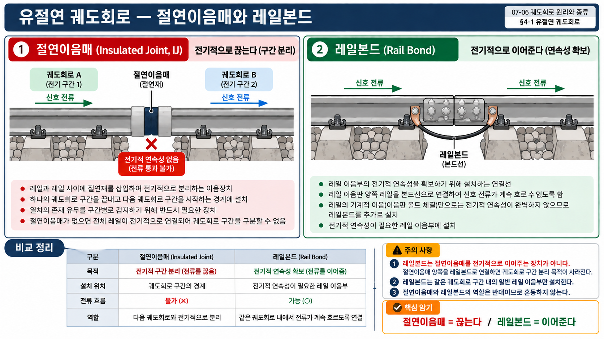

§ 0. 이 단원에서 반드시 먼저 알아야 할 용어 (15개)
이 부품이 무엇인가 → 왜 궤도회로에 필요한가까지 읽고 넘어갑니다.
검지 (Detection)
Detection / Sensing
어떤 상태나 존재를 자동으로 감지하는 것. 궤도회로에서 "열차 검지"란 레일에 연결된 전기회로가 열차의 유무를 자동으로 알아내는 것이다.
열차검지 (Train Detection)
Train Detection
열차의 존재·점유 또는 위치 정보를 자동으로 파악하는 기능 전체. 궤도회로·차축계수기·무선기반 열차제어 등 여러 방식이 있으며, 발리스/지상자는 주로 위치 기준·보정 정보를 제공한다. 이 단원은 궤도회로 방식을 다룬다.
점유 / 비점유
Occupied / Unoccupied
궤도회로 구간에 열차가 있으면 점유(Occupied), 없으면 비점유(Unoccupied). 신호시스템은 이 정보로 신호기·연동장치를 제어한다.
궤도회로 (Track Circuit)
Track Circuit
레일을 전기 회로의 일부로 이용해 열차의 유무를 검지하는 장치. 전원부에서 신호전류를 레일에 흘리고 수신부에서 전류 변화를 감지한다. 쉽게 말해 "레일을 전선으로 쓰는 전기회로"다.
단락 (Short Circuit)
Short Circuit
두 도체가 매우 낮은 임피던스(shunt)로 연결되어 전류가 그쪽으로 분류(分流)되어 흐르는 현상. 열차 차축이 좌우 레일을 낮은 임피던스로 연결(단락·shunt)하면 신호전류가 차축 쪽으로 분류되어 착전단(수신부)에 도달하는 신호전류가 감소한다.
궤도계전기 (Track Relay)
Track Relay
수신기에서 받은 전류가 충분하면 여자(ON), 전류가 떨어지면 무여자(OFF, 낙하)되는 전자식 스위치. 궤도회로의 핵심 판정 소자로 점유/비점유 정보를 출력한다.
절연이음매 (Insulated Joint)
Insulated Rail Joint
레일과 레일 사이에 절연체를 끼워 전기적으로 분리하는 연결부. 인접 구간의 신호전류가 서로 섞이지 않도록 구간 경계를 전기적으로 끊는다.
레일본드 (Rail Bond)
Rail Bond
일반 레일이음매(볼트 이음)에서 전기적 연속성을 확보하기 위해 레일 끝과 끝을 연결하는 도선. 이음매 부분의 접촉 불량으로 신호전류가 끊기지 않도록 안정적인 전기 통로를 만든다. 절연이음매에는 사용하지 않는다.
유절연 / 무절연
Insulated / Jointless
구간 경계를 만드는 방법. 유절연은 절연이음매(물리적 절연체)로, 무절연은 주파수 차이 등 전기적 방법으로 물리적 절연체 없이 경계를 만든다.
동조 (Resonance / Tuning)
Tuning / Resonance
회로의 고유 주파수를 특정 신호 주파수에 맞추는 것. LC 회로가 특정 공진 주파수에 동조되면 주파수별 임피던스 특성을 이용하여 신호를 선택적으로 처리하고 전기적 경계를 형성할 수 있다. 무절연 궤도회로에서 구간 경계를 구분하는 핵심 원리다.
인덕터 (Inductor)
Inductor / Coil
코일(감긴 도선)로 만든 소자. 단독 역할: 주파수가 높아질수록 유도성 리액턴스(XL=2πfL)가 증가하여 임피던스가 커진다 — 직류는 통과하기 쉽고 고주파는 통과하기 어렵다. 동조회로에서의 역할: 콘덴서(C)와 조합하면 LC 회로가 구성된다. 직렬 LC 회로는 공진 주파수(f₀=1/2π√LC)에서 임피던스가 최소화되고, 병렬 LC 회로는 같은 공진 주파수에서 임피던스가 최대화된다. 이 공진 특성이 동조유니트의 주파수 선택성을 만든다.
동조유니트 (Tuning Unit)
Tuning Unit
특정 주파수에서 원하는 임피던스 특성이 나타나도록 설계한 주파수 선택 장치. 무절연 AF 궤도회로의 경계부에서는 인접 구간의 주파수에 대응하는 동조유니트와 공심인덕터 등이 함께 전기적 절연개소를 구성한다. 이 조합의 주파수별 임피던스 특성으로 인접 신호의 누설·간섭을 억제하고 물리적 절연이음매 없이 경계를 만든다.
AF (Audio Frequency)
Audio Frequency — 가청주파수
사람의 귀로 들을 수 있는 주파수 대역(약 20Hz~20kHz). 궤도회로에서는 수백Hz~수kHz 대역을 사용한다. AF는 신호전류·주파수 방식 분류이며 절연방법(유절연/무절연)과는 독립된 기준이다.
임피던스본드 (Impedance Bond)
Impedance Bond
전기철도 복궤조 유절연 궤도회로 등에서 절연개소와 연계해 사용하는 코일 장치. 귀선전류 통로 확보: 절연이음매로 끊어진 레일에서도 견인전류(귀선전류)가 연속으로 흐를 수 있도록 코일을 통한 우회 통로를 제공한다. 신호전류 전기적 분리: 궤도회로 신호전류에 대해서는 높은 임피던스를 나타내어 인접 구간 간 신호전류를 전기적으로 격리한다. "차단"이 아닌 "격리"임에 유의한다.
귀선전류 (Return Current)
Return Current / Traction Return Current
전기철도에서 전동기를 통과한 전류가 레일을 통해 변전소로 돌아오는 전류. 레일을 궤도회로 신호전류와 공유하므로 전기철도 구간에서는 두 전류를 분리하는 임피던스본드가 필요하다.
§ 1. 왜 열차를 검지해야 하는가
열차 검지의 목적
한 구간에 열차 2대 동시 진입
→
충돌 사고
이를 막으려면 제어소(연동장치·자동폐색 논리)가 "지금 그 구간에 열차가 있는가"를 실시간으로 알아야 한다. 궤도회로는 그 정보를 자동으로 제공하는 장치다.
이론 배경: 신호시스템은 열차를 직접 보지 못한다. 레일을 전기 회로로 활용해 열차가 있으면 자동으로 회로 상태가 변하는 구조를 만든다. 사람이 눈으로 확인하지 않아도 전기 신호가 대신 알려준다.
§ 2. 궤도회로 기본 구조와 작동 원리
기본 구조 4요소
① 전원부 (송신기)
→
② 레일 (좌·우)
→
③ 수신부
→
④ 궤도계전기
레일이 도선(전선) 역할. 전원부 → 레일 → 수신부 → 궤도계전기 순으로 전류가 흐르며, 계전기가 점유/비점유를 판정한다.
| 상태 | 레일 상의 전류 경로 | 수신부 전류 | 궤도계전기 | 판정 |
|---|
| 열차 없음 (비점유) |
전원부(송전단) → 레일(한쪽) → 착전단(수신부·궤도계전기) → 귀선 레일 → 전원부 |
정상 (기준치 이상) |
여자(ON) |
비점유 정보 출력
(진행 허용 조건 중 하나) |
| 열차 있음 (점유) |
차륜·차축이 좌우 레일을 낮은 임피던스로 단락(shunt) → 신호전류 차축 방향으로 분류(分流) → 착전단(수신부) 도달 전류 감소 |
감소 (기준치 이하) |
무여자(OFF, 낙하) |
점유 정보 출력
(안전측 제어 신호) |
⚠️ 무여자 원인은 열차 점유만이 아니다: 단선(레일 단절)·전원 이상·계전기 고장도 무여자를 일으킨다. "무여자 = 반드시 열차 있음"으로 일반화하지 않는다.
⚠️ 계전기 여자 ≠ 진행신호 현시: 여자는 비점유 정보 출력일 뿐이며, 신호 현시는 연동장치·자동폐색 논리 등 추가 조건으로 결정된다.
Fail-Safe 내재 구조: 폐전로식 궤도회로는 전원 상실·레일 단선 등 대표적인 고장 시 궤도계전기가 낙하하여 안전측 정보가 되도록 설계한다. 이것이 Fail-Safe의 기본 취지다. 다만 모든 종류의 고장을 일률적으로 "반드시 무여자"라고 일반화하지 않는다.
→ CROSS-REF: 개념 101 Fail-Safe 원칙
전체 인과관계 — 학습 흐름
차륜·차축이 좌우 레일 단락
→
신호전류가 차축 쪽으로 분류
→
수신부 전류 감소
→
궤도계전기 무여자(낙하)
→
점유 정보 출력
→
연동장치·자동폐색 논리 등 제어
📝 기출 예시
Q. 궤도회로에서 열차 차축이 두 레일을 단락시키면 계전기는 어떻게 동작하는가?
정답: 계전기 낙하(落下, drop) — 수신기 전류 감소로 계전기 무여자(비여자)
오답함정: "단락 시 계전기가 여자된다" — 단락은 전류를 우회시켜 수신부 도달 전류를 줄이므로 무여자다.
§ 3. 궤도회로 동작 비교도 (VIS-07A)

VIS-07A — 폐전로식 유절연 궤도회로의 대표 예 / 비점유(좌): 전류 정상→여자 / 점유(우): 차축 단락→전류 분류→수신전류 감소→무여자(낙하) / 무여자 원인은 열차 점유 외에도 존재 / 계전기 여자 = 진행신호 직접 대응 아님
§ 4. 분류축 ① — 절연방법: 유절연 / 무절연
먼저 뜻부터 — 유절연과 무절연은 무엇이 다른가?
유절연(有絶緣)은 궤도회로 구간의 경계에 절연이음매를 두어 인접 구간의 레일 신호전류를 전기적으로 분리하는 방식이다. 쉽게 말해 “절연이음매가 있는 방식”이다.
무절연(無絶緣)은 구간 경계에 절연이음매를 두지 않고 레일을 연속시킨 채 전기적 방법으로 구간 경계를 만드는 방식이다. 대표적인 무절연 AF 궤도회로는 서로 다른 주파수와 동조회로의 주파수 선택 특성을 이용해 인접 구간을 구분한다. 즉 “절연이음매가 없는 방식”이지, 구간 경계 자체가 없는 방식이라는 뜻은 아니다.
★ 한 줄 이해: 유절연 = 절연이음매로 경계를 만든다 / 무절연 = 절연이음매 없이 전기적 방법으로 경계를 만든다
⚠️ 분류 2축 독립 원칙: 절연방법(유절연/무절연)과 신호전류·주파수 방식(직류/교류/AF 등)은 서로 독립된 분류기준이다. "AF = 무절연"으로 등식화하지 않는다.
4-1. 유절연 궤도회로 (Insulated Track Circuit)
절연이음매 — 왜 구간 경계를 전기적으로 끊어야 하는가: 레일은 연속된 도체이므로 전기가 이어진다. 궤도회로에서 각 구간마다 독립된 전기회로가 필요하므로 레일과 레일 사이에 절연체를 끼워 전기적 경계선을 만든다. 이것이 절연이음매다. 인접 구간의 신호전류가 섞이면 어느 구간에 열차가 있는지 구분할 수 없다.
레일본드 — 어디서 전기적 연속성을 확보하는가: 일반 레일이음매(볼트 이음)는 기계적으로 연결되지만 전기적 접촉 저항이 높다. 마모·녹이 생기면 신호전류가 끊어진다. 레일본드는 레일 끝과 끝을 구리 도선으로 직접 연결해 전기적 연속성을 확보한다. 절연이음매에는 사용하지 않는다(달면 절연이 깨진다).

VIS-07E — 절연이음매는 궤도회로 경계에서 신호전류를 끊어 구간을 분리하고, 레일본드는 전기적 연속성이 필요한 일반 레일 이음부에서 신호전류가 계속 흐르도록 연결한다. 레일본드로 절연이음매를 우회 연결하면 절연 목적이 사라진다.
| 구성 요소 | 역할 | 설치 위치 |
|---|
| 절연이음매 | 구간 경계 — 전기적 분리 | 궤도회로 구간 양 끝 레일 이음매 |
| 레일본드 | 일반 이음매 전기적 연속성 확보 | 절연이음매 이외의 레일 이음매 |
| 임피던스본드 | 귀선전류 통과 + 신호전류 격리 | 절연개소 부근 (전기철도 복궤조 등) |
→ CROSS-REF: 개념 96 임피던스본드 — 귀선전류는 통과, 신호전류는 격리(차단이 아님)
★ 유절연 핵심 = 절연이음매로 경계 형성 / 일반 이음매는 레일본드로 전기적 연속성 확보 / 전기철도 복궤조 등에서는 임피던스본드로 귀선전류 통로 확보
4-2. 무절연 궤도회로 (Jointless Track Circuit)
🤔 왜 물리적 절연이음매 없이도 구간 경계를 만들 수 있는가?
핵심: 인접 구간이 서로 다른 주파수를 사용하면, 동조회로(LC 회로)의 주파수별 임피던스 특성으로 전기적 구간 경계를 형성할 수 있다.
동조의 원리
→
인덕터의 역할
→
동조유니트 구성
→
구간 경계 형성
동조란 무엇인가: 라디오 채널을 맞추는 것이 동조다. LC 회로(인덕터+콘덴서)는 회로 구성에 따라 특정 공진 주파수(f₀)에서 임피던스가 급격히 변한다 — 직렬 LC는 공진 시 임피던스 최소, 병렬 LC는 공진 시 임피던스 최대. 공진 주파수에서 벗어날수록 이 특성이 달라지므로, 주파수별 임피던스 특성을 이용하여 신호를 선택적으로 처리할 수 있다. 이것이 주파수 선택성의 원천이다.
인덕터란 무엇인가: 코일로 만든 소자. 단독 특성: 주파수가 높아질수록 유도성 리액턴스(XL=2πfL)가 증가한다 — 이상적인 인덕터에서는 직류에 대한 유도성 리액턴스가 0에 가깝고, 주파수가 높을수록 유도성 리액턴스가 커진다. LC 동조회로에서의 역할: 콘덴서(C)와 조합하면 공진 주파수 f₀=1/(2π√LC)에서 직렬 LC 회로는 임피던스가 최소화되고, 병렬 LC 회로는 임피던스가 최대화된다. 이 공진 특성이 동조유니트의 주파수 선택성을 만드는 핵심 원리다.
동조유니트가 무엇인가: 특정 주파수에서 원하는 임피던스 특성이 나타나도록 설계한 주파수 선택 장치다. 대표적인 무절연 AF 경계부에서는 인접 주파수에 대응하는 동조유니트들과 공심인덕터(Air-Core Inductor)가 함께 전기적 절연개소를 구성한다. 이 조합이 주파수별로 서로 다른 임피던스 특성을 만들어 인접 구간 신호의 누설·간섭을 억제한다. 세부 POLE/ZERO 및 직렬·병렬 등가회로는 07-07에서 다룬다.
왜 절연이음매 없이 경계를 만들 수 있는가 — 원리 설명:
A 구간과 B 구간이 서로 다른 주파수(f₁, f₂)를 사용할 때, 경계부에 각 주파수에 대응하는 동조유니트와 공심인덕터를 조합한 전기적 절연개소를 둔다. 이 회로망은 f₁과 f₂에 대해 서로 다른 임피던스 특성을 나타내어 각 구간의 신호가 필요한 방향으로 형성되도록 하고 인접 구간으로의 누설·간섭을 억제한다. 즉, 레일을 물리적으로 끊지 않고 주파수 선택성으로 전기적 경계를 만든다. ※ 세부 POLE/ZERO 동작과 등가회로는 07-07 참조.
★ 무절연 AF(대표 예) = 동조유니트 + 공심인덕터 등으로 전기적 경계 형성 / 절연이음매 불필요 / 장대레일 적용에 유리
📝 기출 예시 (개념 102 — 기출 직접 확인)
Q. 레일 이음매에 절연판 없이 주파수 차이로 구간을 구분하는 궤도회로 방식은?
정답: 무절연AF궤도회로
오답함정: "무절연은 구간 구분이 불가능하다" — 주파수 차이로 구분하므로 틀림.
§ 5. 분류축 ② — 궤도회로 신호전류·주파수 방식: 직류 / 교류 / 고전압 임펄스 / AF
⚠️ 분류축 ① 절연방법(유절연/무절연)과 분류축 ② 신호전류·주파수 방식(직류/교류/AF 등)는 독립적이다. "AF = 무절연"으로 등식화하지 않는다. AF는 무절연 구현에 주로 사용되지만 절연방법과 신호전류·주파수 방식은 서로 다른 분류 기준이다.
| 방식 | 신호전류 특성 | 주요 특징 및 용도 | 4.html/기출 확인 |
|---|
| 직류(DC) |
직류 정전압 |
전통적·단순 구조. 귀선전류(직류)와 성질이 같아 간섭 대책 필요. 일반선로에 적용. 유절연과 함께 사용. |
일반 기술 기반 |
| 교류(AC) |
상용주파수(50/60Hz) |
주파수 특성으로 귀선전류와 분리 용이. 유절연과 함께 사용. 임피던스본드로 귀선전류 격리. |
일반 기술 기반 |
| 고전압 임펄스 |
고전압 펄스 신호 |
강한 전자기 잡음 환경에서 신뢰성 확보. KR S-04030 Rev.10에서 궤도회로 종류로 분류. 통합모듈형 장치 규격(KRSA-4040-R1) 존재. |
KR S-04030 Rev.10
KRSA-4040-R1 확인 |
| AF (가청주파수) |
수백Hz~수kHz 대역 |
구간마다 서로 다른 AF 주파수를 사용하여 동조유니트로 무절연 구간 경계 형성 가능. 절연이음매를 줄일 수 있어 장대레일 적용과 유지보수 측면에 유리하다. |
4.html 기출 직접 확인 (개념 102) |
코드식(Code TC) — 별도 분류 기준 주의:
코드식 궤도회로는 신호전류를 특정 코드 패턴으로 변조하여 열차검지와 동시에 ATC 등과 연계하여 속도코드 등의 정보를 차상으로 전달하는 데 활용될 수 있다. 이는 신호전류·주파수 방식(직류/교류/AF)가 아니라 신호전송 방식(변조 방식)에 해당하므로, 분류축 ②의 직류/교류/AF와 동일한 기준으로 병렬 비교하는 것은 부적합하다. 실제 궤도회로에서는 전원·주파수 방식과 조합될 수 있으므로, 이 단원에서는 별도 참고 개념으로만 구분한다.
분류축 ① 절연방법
유절연 — 절연이음매로 물리적·전기적 분리
무절연 — 동조유니트 주파수별 임피던스로 전기적 경계 형성
분류축 ② 신호전류·주파수 방식
직류(DC) — 직류 신호전류
교류(AC) — 50/60Hz 상용 교류
고전압 임펄스 — 고전압 펄스 신호
AF (가청주파수) — 수백Hz~수kHz
코드식(참고) — 신호전송·변조 관점의 구분. 위 4종과 동일한 분류축으로 암기하지 않음
★ 두 축은 독립적 — "AF 유절연 궤도회로"도 이론적으로 존재 가능. "AF = 무절연"은 오답.
§ 6. 임피던스본드와 귀선전류 — 전기철도 구간의 추가 조건
왜 전기철도 구간에서는 임피던스본드가 필요한가:
전기철도에서 전동기를 돌린 전류는 레일을 통해 변전소로 되돌아간다(귀선전류). 유절연 궤도회로에서 절연이음매가 레일을 전기적으로 분리하면 귀선전류 통로도 함께 끊어져 전기철도 운행이 불가능해진다.
임피던스본드는 이 문제를 해결한다. 귀선전류 통로 확보: 절연이음매 양측의 코일을 통해 견인전류(귀선전류)가 중성점을 통해 연속으로 흐를 수 있도록 한다. 신호전류 전기적 격리: 궤도회로 신호전류에 대해서는 높은 임피던스를 나타내어 인접 구간의 신호전류와 전기적으로 분리(격리)한다. "차단"이 아니라 임피던스 특성을 이용한 "격리"임에 유의한다.
| 임피던스본드의 기능 | 대상 전류 | 처리 방식 |
|---|
| 귀선전류 통로 확보 | 견인전류(귀선전류) | 중성점을 통한 연속 통로 제공 — 절연이음매를 우회해 귀선전류가 끊기지 않도록 함 |
| 신호전류 전기적 분리(격리) | 궤도회로 신호전류 | 높은 임피던스로 격리 — "차단"이 아닌 임피던스에 의한 "전기적 분리" |
→ CROSS-REF: 개념 96 임피던스본드 역할 — 귀선전류 통로 확보 + 신호전류 전기적 격리
§ 7. 시험 포인트 요약
★ 3단계 인과: 단락(Short) → 수신부 전류 감소 → 계전기 무여자(낙하) → 점유 정보 출력
★ Fail-Safe 내재: 전원 상실·레일 단선 등 대표적인 고장 시 안전측(점유측) 정보가 되도록 설계
★ 유절연: 절연이음매=경계 / 레일본드=일반이음매 전기 연속 / 임피던스본드=전기철도 복궤조 등에서 귀선전류 처리
★ 무절연 AF(대표 예): 동조유니트·공심인덕터 등으로 주파수 선택형 전기적 경계 형성. 절연이음매 없이 구간 구분 가능
★ 2축 독립: 절연방법 vs 신호전류·주파수 방식은 별개 분류. AF = 무절연 등식 금지
⚠️ 무여자 원인 = 열차점유만 아님. 단선·전원이상·고장도 무여자 발생
⚠️ 계전기 여자 ≠ 진행신호 현시. 여자는 비점유 정보 출력뿐, 신호 현시는 추가 조건 필요
⚠️ AF = 신호전류·주파수 방식 분류. 무절연 = 절연방법 분류. 두 개는 다른 기준
§ 8. 다음 단원 연결 — 07-07 무절연AF궤도회로 상세
07-07에서 다룰 내용
AF가 무엇인가
→
왜 주파수를 사용하는가
→
동조·동조유니트·인덕터 상세
→
무절연 경계 형성 원리
→
장단점
→
차상신호·ATC 관계 (근거 범위 내)
§ 9. 관련 문제 — 철도신호 기출복원 CBT
📋 철도신호 기출복원 CBT · sig_052 · S등급
다음 중 「궤도회로」 자체의 정의로 가장 적절한 것은?
① 절연이음매 없이 주파수·전기적 경계로 인접 궤도회로를 구분하는 방식이다.
② 전형적인 폐회로식 궤도회로에서 선로가 비어 있으면 궤도계전기가 여자되는 상태이다.
③ 실제 열차가 없는데도 궤도회로가 점유로 표시되는 현상이다.
④ 레일을 전기회로의 일부로 사용하여 특정 구간의 열차 점유 여부를 검지하는 장치이다.
📋 철도신호 기출복원 CBT · sig_053 · A+등급
다음 설명에 해당하는 용어·장치로 가장 적절한 것은? "차륜과 차축이 두 레일을 전기적으로 연결하여 궤도회로 수신 상태를 변화시키는 현상이다."
① 무절연 궤도회로
② 임피던스 본드
③ 분로저항
④ 차축 단락(Shunting)
📋 철도신호 기출복원 CBT · sig_057 · A+등급
다음 설명에 해당하는 용어·장치로 가장 적절한 것은? "열차가 진입해 레일이 단락되면 궤도계전기가 무여자되어 점유를 표시하는 상태이다."
① 무절연 궤도회로
② AF 궤도회로
③ 비점유 시 궤도계전기 여자
④ 점유 시 궤도계전기 낙하
📋 철도신호 기출복원 CBT · sig_059 · A+등급
다음 설명에 해당하는 용어·장치로 가장 적절한 것은? "서로 인접한 궤도회로 구간을 전기적으로 분리하기 위해 레일에 설치하는 절연부이다."
① 절연이음매
② 도상저항
③ 무절연 궤도회로
④ AF 궤도회로
📋 철도신호 기출복원 CBT · sig_061 · A+등급
다음 설명에 해당하는 용어·장치로 가장 적절한 것은? "전철구간에서 신호전류 분리와 견인전류 귀환을 함께 고려하기 위해 사용하는 장치이다."
① 임피던스 본드
② 절연이음매
③ 가점유
④ 차축 단락(Shunting)
📋 철도신호 기출복원 CBT · sig_063 · A+등급
다음 설명에 해당하는 용어·장치로 가장 적절한 것은? "가청주파수 대역의 신호를 이용하며 무절연 방식 구성에 활용되는 궤도회로이다."
① 임피던스 본드
② 분로불량
③ AF 궤도회로
④ 무절연 궤도회로
§ 10. §9 관련 문제 정답 및 해설
| 문항 | 정답 | 핵심 해설 |
|---|
| Q1 | ④ | 궤도회로는 레일을 전기회로의 일부로 사용하여 특정 구간의 열차 점유 여부를 검지하는 장치이다. ①은 무절연 방식의 특징, ②는 폐회로식 궤도회로의 비점유 상태 설명, ③은 가점유 현상의 설명이다. |
| Q2 | ④ | 차륜·차축이 양 레일을 낮은 임피던스로 단락(shunt)하면 신호전류가 차축 쪽으로 분류되어 수신부 도달 전류가 감소하고, 궤도계전기가 무여자(낙하)되어 점유 정보를 출력한다. |
| Q3 | ④ | 열차 점유 시 차축 단락으로 수신부 전류가 감소하여 궤도계전기가 무여자(낙하)된다. 전원 상실·레일 단선 등 대표적인 고장도 안전측 정보가 되도록 설계하지만, 모든 고장을 일률적으로 같은 현상으로 일반화하지 않는다. |
| Q4 | ① | 절연이음매는 인접 궤도회로 구간의 신호전류가 서로 섞이지 않도록 레일을 전기적으로 분리하여 구간 경계를 만든다. |
| Q5 | ① | 임피던스본드는 전기철도 복궤조 유절연 궤도회로 등에서 귀선전류의 연속 통로를 확보하면서 궤도회로 신호전류는 임피던스 특성으로 전기적으로 격리한다. |
| Q6 | ③ | AF 궤도회로는 Audio Frequency(가청주파수) 대역의 신호를 사용한다. 무절연 구성에서는 동조유니트·공심인덕터 등의 주파수 선택 특성을 이용해 전기적 경계를 형성할 수 있다. AF와 무절연은 서로 다른 분류축이다. |
⚠️ 문제를 먼저 풀고 난 뒤 이 정답·해설을 확인한다. §9 문제 본문에는 정답 표시·정답 하이라이트·✓ 표시를 넣지 않는다.
📋 작업 상태: FINAL PUBLISH v1.7 (FINAL LOCK) | 2026-10-03
검증 근거: 4.html 개념 95(기본원리·절연이음매), 개념 96(임피던스본드), 개념 102(무절연AF, 기출 직접 확인) | KR S-04030 Rev.10 (궤도회로 종류 분류) | KRSA-4040-R1 (고전압임펄스 궤도회로장치 통합모듈형 규격)
v1.3 추가 수정: ①동조 §0 일반화 삭제 → 임피던스 특성으로 전기적 경계 형성 ②인덕터 직렬 LC 임피던스 최소/병렬 LC 임피던스 최대 구분 ③동조유니트 §4-2 f₁/f₂ 일반화 제거 → 세부는 07-07 위임 ④고전압 임펄스 KR S-04030 Rev.10·KRSA-4040-R1 반영 ⑤코드식 ATC 문구 "활용될 수 있음"으로 수정
v1.4 최종검수: ①동조유니트 f₁=저임피던스/f₂=고임피던스 일반화 제거 ②무절연 AF 경계=동조유니트+공심인덕터 조합으로 정정 ③Fail-Safe "모든 고장" 절대표현 제거 ④발리스=위치 기준·보정으로 역할 정정 ⑤분류축 명칭을 신호전류·주파수 방식으로 정제 ⑥VIS-07A 문구 정합성 보정
v1.5 퍼블리싱: 기존 인라인 SVG를 제거하고 검수 완료된 생성 이미지 VIS-07A_track_circuit_FINAL.png를 실제 본문 §3에 삽입
v1.5 §9 문제 수록: 철도신호 기출복원 CBT 6문항 ①②③④ 선택지 완전형 하드코딩 (sig_052·053·057·059·061·063) | 철도왕·기출복원 127문항(철도공학)·범한사 교재 — 07-06 직접 해당 문항 없음 → 섹션 미생성
v1.6 FINAL LOCK: ①§9 Q1을 단일정답형으로 명확화 ②6문항 문제 본문에서 정답·해설 완전 분리 및 §10 정답·해설표 신설 ③Q2 해설을 본문 기술표현과 정합화 ④Q3·§7 Fail-Safe 절대표현 제거 ⑤헤더·메타 버전 v1.6으로 통일
v1.7 재퍼블리싱: ①§4 시작부에 유절연/무절연 개념 정의를 명시하여 ‘절연이음매 유무’와 ‘전기적 구간 경계’ 차이를 선행 설명 ②§4-1 절연이음매·레일본드 비교 VIS-07E 신규 삽입 ③개별 인쇄/PDF 버튼 및 PRINT LOCK(상12/우12/하12/좌18mm), 인쇄 시 사이트 헤더 숨김 기준 반영
후속 작업: VIS-07B는 필요 시 별도 제작. 07-06 본문·VIS-07A 퍼블리싱에는 영향 없음.